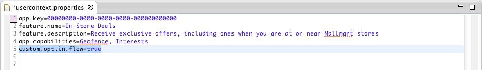

If you haven't done it yet be sure to check out the Android Quick Start Guide to get the SDK installed and running.
This document describes how to use the Gimbal APIs to develop Android applications that can benefit from contextual Services.
The ContextCoreConnector must be enabled prior to using any other Gimbal features.
All calls to the API will return failures with a disabled status message until this step is complete.
First, you need to obtain an instance of ContextCoreConnector and enable it.
The first time it is enabled, it tries to register with the Gimbal server using your applications package name and API Key.
private ContextCoreConnector contextCoreConnector;
@Override
public void onCreate(Bundle savedInstanceState) {
super.onCreate(savedInstanceState);
contextCoreConnector = ContextCoreConnectorFactory.get(this);
}
The enable() method is used to enable the SDK for use by the end user.
contextCoreConnector.enable(this, new Callback() {
@Override
public void success(Void responseObject) {
NSLog(@"Gimbal enabled");
}
@Override
public void failure(int statusCode, String errorMessage) {
NSLog(@"Failed to initialize gimbal %@", error);
}
});
The isPermissionEnabled() method allows your application to ensure that it has been previously enabled.
if (contextCoreConnector.isPermissionEnabled()) {
startService();
setupListeners();
}
else{
ContextCoreStatus status = contextCoreConnector.getStatus();
toastAndLogError(status.getStatusMessage());
enableCoreConnector();
}
To allow Gimbal to optimize location detection and balance battery consumption based on users’ current interaction with your application, use the method setCurrentActivity() on ContextCoreConnector to notify Gimbal when the current activity changes.
In your onResume() call
contextCoreConnector.setCurrentActivity(this);
In your onPause() call
contextCoreConnector.setCurrentActivity(null);
contextCoreConnector.deleteAllUserData(new Callback() {
@Override
public void success(Void responseObject) {
LOG.info("Delete User Data COMPLETE");
}
@Override
public void failure(int statusCode, String errorMessage) {
LOG.info("Delete User Data FAILED");
}
});
By default, when you enable the SDK using enable(), a Gimbal branded dialog containing the end user consent, privacy notice and terms of service will be presented to the end user.
However, you have the choice to display your own privacy notice and end user opt-in consent in lieu of the Gimbal branded dialog.
Important In order to enable this feature, you must submit a request to get an approval and you will be bound by the "White Label Mode" terms within the Gimbal Developer Agreement.
Once your request is approved, you will be able to use this feature by adding a property custom.opt.in.flow=true to usercontext.properties file.

contextPlaceConnector = ContextPlaceConnectorFactory.get(this);
PlaceEventListener placeEventListener = new PlaceEventListener() {
@Override
public void placeEvent(PlaceEvent placeEvent) {
// do something with the place event
}
};
contextPlaceConnector.addPlaceEventListener(placeEventListener);
The following fields are available in the PlaceEvent passed to the listener:
| Field Name | Description |
|---|---|
| placeType | PLACE_TYPE_ORGANIZATION refers to places created in Context Console and applies to all of your users. PLACE_TYPE_PERSONAL is created locally on the phone and only applies to a single user. |
| eventType |
PLACE_EVENT_TYPE_AT means that the user has arrived at the place
PLACE_EVENT_TYPE_LEFT means that the user has just left the place.
|
| Place |
The Place object associated tot he event.
|
| Time | The time of the event in milliseconds since 1970 (See System.currentTimeMillis()) |
contextPlaceConnector.removePlaceEventListener(placeEventListener);
We detect "AT" events more quickly than "Leave" events. The system needs sufficient evidence to promote a "Leave" event to be statistically accurate. False "Leave" events happen because location fixes on today’s smartphones tend to bounce around. (Open a map application on your phone and watch the blinking cursor bounce around.) We work to eliminate these inaccuracies to ensure your end-user does not receive multiple incorrect events.
Tell Gimbal that your application is interested in receivnig Push Notifications
ContextPushNotificationsConnector.registerForRemoteNotification(context, SENDER_ID);
In order to receive Push Content, create an instance of ContextCoreConnector and add an implementation of ContentListener to it. Whenever a push is sent to the client, Gimbal will call your application on ContentListener.contentEvent. Your application can now decide whether or not to raise a notification to the User. This is the same mechanism as listenting for content based on Place events.
ContextCoreConnector contextCoreConnector = ContextCoreConnectorFactory.get(context);
contextCoreConnector.addContentListener(new ContentListener() {
@Override
public void contentEvent(ContentEvent contentEvent) {
// Push Content Received
}
});
Note If you want your Listener to survive service/device restart, then make sure you have an Android Service in your application that is started as STICKY and the above code is executed in onCreate of the service.
In order to enable Push to target Users present at certain Geofences, you'll have to set the following property to usercontext.properties in you application.
place.state.available.on.server=true